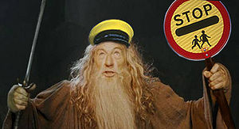
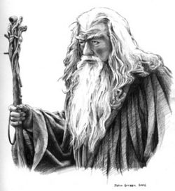
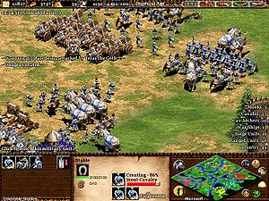

Gandalf
 De: La Frikipedia, la enciclopedia extremadamente seria.
De: La Frikipedia, la enciclopedia extremadamente seria.
De la serie magos del mundo:
Foto de una promoción de Colgate
| Nacimiento
|
203 D.F (después de fraga)
|
| Muerte
|
Pregúntenle al Balrog
|
| Tipo de Magia
|
Lefa Blanca
|
| Bueno o Malo
|
Bueno, esta en contra de Ide Amin Shrekman
|
| Nacionalidad
|
Noruego
|
| ¿Cuantos porros fuma?
|
Todo el disponible
|
| Atentados contra la humanidad
|
Fumarse toda la hierba de MacEnroud
|
| Religión
|
Cienciologia
|
Ahora esta en un centro de rehabilitación junto a lindsey lohan y fue profesor
«¡¡No puedes pasar¡¡»
~ ' Gandalf cuando un testigo de jehova toca su puerta
«¡¡No puedes pasar¡¡»
~ ' Gandalf cuando esta en el servicio
«¡¡No puedes pasar¡¡»
~ ' Gandalf trabajando temporalmente como segurata
«¡¡No puedo pasar¡¡»
~ ' Gandalf cuando se mira en el espejo
Gandalf, mas conocido como GRANDALF nació, como es de suponer, viejo. Surgió de una mutación entre un hobbit un enano, Saruman y la tía de Frodo. Ahora está retirado y tiene un zoo de hobbits donde se les puede dar de comer e incluso se permite montar en Shrekman(aunque el jodío a veces muerde)
Cuenta la leyenda que entre sus barbas se encuentra un criadero de pitufos y que incluso tiene un parque de atracciones.
Distintas castas sociales
Abuelete, a lo largo de su vida, ha experimentado las diferencias sociales actuales del siglo Medio. A continuación pueden verse sus distintos estatus sociales y así sucesivamente:
 Esta es la verdadera escena en la que detiene al Balrog
El peregrino gris
En esos momentos Gandalf era un joven alocado al que le gustaba recorrerse su barrio en busca de un piso de más de 30 metros cuadrados, algo realmente difícil en la época. En esa época hizo amistad con MacEnroud, un jippie que se dedicaba a cultivar marihuana en su choza, que el veía como una mansión con cascada y todo, todo esto debido a los gases indigestos esparcidos por el ambiente. También trabó amistad con Shrekman aunque este fue expulsado del El Concilio Blanco por fumarse pipas y comprar marihuana de mala calidad a los Urukus. Pero esa época resulto difícil para Gandalf ya que descubrió que sus padres eran adoptivos.
Gandalf el Gris
El color de la barba seguía igual, pero la diferencia con la época anterior es que, por fin, consiguió hogar. Y este no era un hogar cualquiera, no, era una casita en las afueras con vistas al Entaguas y un jardincito donde cultivaba,además de calabazas, hojas de Athelas, conocidas también como Hojas de Mierda, porque en realidad no hacían una mierda, pero como estaban todos fumados de esta planta se sentían mejor con ellas.
Gandalf el Blanco
Esta distinción social coincidió con el inicio de la enemistad con Shrekman, que lo encerró en el baño del Dragón Verde' o como era conocido en la Comarca con su lenguaje común, Vamonoh deh putah. El baño del Dragón verde como bien es sabido no se limpia muy a menudo, ya que prácticamente siempre está ocupado por almas del diablo que descalzos se hacen unas gayolas, de ahí viene el color blanco de Gandalf, pobrecito, de aquella no existía Ariel y aunque existiera esas manchas no se van así como así. La solución ideada por el mismo consistió en echarse mahonesa toda por encima para que adquiriese ese color tan característico y pegarse una linterna con celofán a la camisa interior, todo esto daría un efecto de poder indescriptible...mientras duraran las pilas claro. Hay otra versión y es que Gandalf quería rendir homenaje a su gran ídolo Michael Jackson y se hizo la misma operación de cambio de color.
Hazañas
- Convencer a un señor bajito, peludo y comunista de tirar una sortija vieja a una montaña de mierda pura y cristalina.
- Ser el presidente de Honduras desde el año 0 hasta el 215 d.F.
- Volar a lomos de un águila que nunca existió, y que de haber existido, le causó la extinción.
- Salvarse del puro que le iban a meter por joder especies animales.
- Cogerse a Galadriel
- Violar hobbits sin piedad ni decoro.
- Encontrar un piso de más de 30 metros en tan sólo un par de siglos.
- Coronar al rey de gordon.
- Desaparecer tras llevarse toda la maría buena que quedaba en la comarca (actualmente en busca y captura).
Época de profesor
 Gandalf en una foto promocional reciente. Poco después dejó el bastón, levantó el brazo y lo dejó caer suavemente encima de su pierna, produciendo un leve golpecito.
Este espécimen, en la época en la que fue Gandalf El Blanco, formó parte del grupo de profesorado universitario responsable directo de la desesperación anterior y posterior a la fase de sueño, que corresponde básicamente a todo el tiempo que dura una de sus clases magistrales. Imposible resistirse.
Si todos fuesen como él, desde luego ya no tendría sentido la aproximación a las inmediaciones del coma etílico los jueves por la noche motivadas por la presión docente (ver universidad), ya que formaríamos parte de mundo idílico en que todos, todos, podemos levantar exitosa-mente una empresa sin saber cómo.
Momentos críticos
- A la hora de recoger su nómina, ya que se le debería caer la maldita cara de vergüenza.
- Su capacidad de hacer hibernar el ordenador con sólo apuntarlo con un dedo. Es aún desconocido el don que le permite esta acción del demonio, aunque nos haga creer que ha sido debido a la carga eléctrica insuficiente en el acumulador del portátil.
- No se digna ni en saber en que carrera da clase, ya que según él no conocemos la existencia de filtros y no hemos trabajado nada con ellos.
Objeto del cual depende su vida.
Filosofía de vida
Pure Scotch WiFi
- Empty your mind...
- Be formless, shapeless. Like WiFi.
- You put WiFi into a bottle and it becomes a DomoBottle.
- You put WiFi in El Amez, and it becomes XDSI-BRI.
- WiFi can flow, or it can be pirated...
- Be Gandalf, my friend!
Turn Down Cojo
- You can turn Terrússia
- upside down,
- if you try.
- You can turn CojoTartaja
- upside down,
- like Gandalf's umbrella
- but who knows.
El Hombre Que Mató El Atenea
- (o el discurso de Gandalf a Giri, Giri, Giró en relación al Moodle)
- Sí, es muy joven, usted sólo conoce el concepto de Aula Virtual desde que yo lo inventé, era muy diferente entonces, muy diferente señor Giró, muy diferente... La primera vez que llegué a la UOC, fue en una diligencia. Algo muy parecido a esto.
- (Extracción del discurso de Gandalf a los habitantes del TR-2 una vez tomado. Véase "Grito al Alzamiento y Golpe de Estado ante ComsAD de Robotín")
Sueldo
Esta clase de especímenes cobra alrededor de 25.000 dólares al año netos.
Su tiempo lo invierte en nada.
Vestimenta
El portentoso Gandalf no se preocupó en su hábito de trabajo: jeans levi's azul claro, polo color pastel (generalmente de tonos oscuros) y metido por dentro de los pantacas y calzado camper. Las malas lenguas aseguran que su grado de gandulería le impide realizar el esfuerzo de cambiarse la ropa. Además, al wonderfull mago de la perrería y la vagancia le acompañan siempre sus inseparables amigos: el móvil que pasa las transpas de clase y el ordenador portátil que hiberna cuando el nivel de stuffing bits generados por su boca supera la cota de desesperación.
Frases célebres en el ámbito de trabajo
Gandalf ha ganado su fama y prestigio con valerosas aportaciones al intelecto humano:
Este era su mayor entretenimiento.
- El tiempo no se pierde, se gasta
- El logotipo tiene que poderse ver en una página web
- Hoy no sabía si llegaría a clase
- Hoy no hay clase
- Hoy prefiero que habléis vosotros
- Si os digo la verdad confiaba que hoy el proyector no iba a funcionar para no hacer clase
- La gracia de Microsoft es que se ha dejado piratear
- Mis vecinos me usurpaban la conexión WiFi porque son estudiantes de telecomunicaciones (¿tu eras profesor no?)
- Con un bote de Pringles y algo de esfuerzo se puede hacer una antena que ríete tu de esas que valen 70€
- ¿Cómo lleváis el trabajo?
- Ya estáis aprobados dijo el primer día de clase.
- Esta asignatura es un rollazo. No la haremos, ¿de acuerdo?
- Hoy es el día de puertas abiertas. Vamos a hacer ver que hacemos alguna cosa.
- Me pensaba que hoy no haríamos clase.
- En 3/4 de hora no puedo dar clase.
- Permitidme una vez más no hacer clase.
- La semana que viene no habrá clase (Informando que se va a Monterrey, entre las risas de la afición)
- Dejadme que hoy me aproveche un poco de vosotros. Una vez más
- Cuando acabe este curso lo sabréis todo de mi vida. Al menos de una gran parte
- ... (Respondiendo a la pregunta "¿Las matadas las hacen los matados?")
- Ésser copiat és un bon senyal. (Que se lo digan a Microsoft entonces, o mejor, que se lo digan a Apple, o a Xerox si me apuras tío!)
Bilbo Saquet
Bilbo Saquet (en espiñol, Bolsón) es un amigo íntimo de Gandalf. Se le atribuye la patente de las pinzas de mochila en la baja edad media, en el Valle de Mordor, al lado de Vacarisses. Actualmente pierde el tiempo con la construcción de un aparato que nos permita oír música vía WiFi con las radios portátiles que nuestros abuelos se llevan al campo cuando hay partido.
Pueden saber el ritmo cardíaco de Bilbo Saquet cuando quieran y en tiempo real a través del web de la Seguridad Social o bien enviando un SMS al 77777.
Archienemigos
- Su principal enemigo antes mencionado es Shrekman. Su rivalidad nace en las carreteras de Tunels de Vallvidrera y C-58 donde cada día se producen unas apasionantes demostraciones de conducción temeraria y manejabilidad de la motocicleta así como impresionantes muestras de agresividad vial.
Hasta el momento los resultados son los siguientes:
- Shrekman = 23 victorias
- Gandalf = 21 victorias
- Récord = Shrekman. Gordon-Mordor en 7 minutos 21 segundos. Efectuado el día 22/10/06.
- Anécdota: El primer día Gandalf tomó mal la salida a la autovía y mientas su rival Shrekman se plantó en Mordor en poco menos de 9 minutos, manteniendo así su hegemonía, el bueno de Gandalf apareció en Gordon. Al regresar a Mordor, unas 3 horas más tarde,entró en una clase del departamento de mecánica y mientras sus alumnos atónitos esperaban una magistral clase de Teoría y evolución de los sistemas termomecánicos: Las poleas, Gandalf les deleitó con una amplia clase sobre sistemas de gobierno WiFi y Bluetooth sobre su ordenador personal.
Grito al Alzamiento y Golpe de Estado ante ComsAD de Robotín
- El Jefe del Estado Mayor (Gandalf) del Estado de la UpeSé hace saber a todo alumno de ETTSI del campus de Gordon que está dispuesto a tomar el cargo de Comandante y capitanear así el alzamiento ante el déspota TeSeCe, o cruzada contra la herejía Fourierista (aprovechando el vacío de poder provocado por la marcha del CojoTartaja), con el apoyo del Alto Mando (Bilbo Saquet, Mr. Taylor y Miss. Guiga) y la benedicción eterna de la Virgencita. El día y la hora dependen del tiempo que tarde en llegar su silla ergonómica motorizada que ya ha encargado.
- La orden se emitirá por el Múdel.
- No habrá piedad ante los indecisos. Se les aplicará juicio sumarísimo según la ley militar de dicho Estado que condena a aula perpétua con Robotín, incluyendo una tortura que puede tomar varias formas, desde la integral del arco tangente hasta el dibujo en la pizarra de los ejes cartesianos.
- El Alto Mando tiene el honor de declarar algunos de los luchadores ventajosos que encabezaran las filas inferiores:
- Negociador pre-batalla: L'amic dels profes
- Capitán-hidalgo de los escudos humanos: Trijota
- Diseñador de la bandera Gandalfista: Anchilita AR
- Interrogador: Lolo
- Interlocutor entre bandos: El Amez, que dadas sus carencias en cuanto a decisión y rapidez, establecerá el protocolo de comunicación Three Way Foot Shake entre ambos bandos como única salvación a la tortura del arcotangente, siguiendo los pasos que en su día explicó Rambo Domènech y que NO le dio tiempo a "esculpir" en su soporte papel-cartón-piedra.
- La reunión se hará después del ocaso, delante del Bar Restaurante Dintel. La retaguardia, formada por los Tiradores de caña de La Resi, capitaneados por El Amez, tomará la parte este del TR-2, inutilizando así las innovadoras armas diseñadas en los laboratorios del departamento de Gago el Vago, evitando la resistencia conjunta del TeSeCe con los electrónicos. Los escudos humanos avanzarán por el patio mientras una unidad especializada con botas saltará del helicóptero al charco del patio interior. Se colectivizará la copistería y se harán gratis 400 banderas A4 a todo color para el ataque final. Si las negociaciones fallan, se pedirá ayuda a Rambo para inutilizar la red del Múdel, a no ser posible, se penetrará por la fuerza en el sector norte del TR-2, forzando la rendición de los pelacables nenazas bajo la amenaza de hacer un lavado de cerebro completo a Robotín. El ataque contra el TeSeCe se entenderá desde la secta Fourierista francesa cómo una traición imperdonable al cálculo matemático. Por esto, Gandalf ha dispuesto un ejército de cien mil anti-teóricos cátares, súbditos tolosanos y maños en Hildorien preparados para reducir la embestida ilustrada que motivará la toma de Gordon. A continuación, imágenes de la batalla:
 Fue una batalla cojonuda.
- Una vez tomado el control (a no ser que todos pasemos a resolver las transformadas en francés) Gandalf promete la derogación de los principos básicos de la Teoría del Señal que fueron establecidos por hordas judeomasónicas hace siglos. El sistema de aplicación será una comuna anarco autogestionada con una sola asamblea general, la de presentación de trabajos.
«Uniros parias! Jo sóc el Rei!»
~ El general de los ejércitos de Tierra, Mar y WiFi al acabar.
Rumore, rumore, rumoree...
- Se rumorea sobre cierto grupo que Gandalf quiere dar un golpe de estado a Com's, actualmente gobernada por Robotín.
- Se rumorea la pregunta: ¿qué hará con una clase con 150 alumnos?
- Se rumorea que hará hacer trabajos en grupos de 20 sobre las comunicaciones y así promoverá el aprobado general.
- Se rumorea que en el examen de com's de este mismo año, el profesor Gandalf, que en teoría tiene que vigilar que nadie copie y aydar a aquellos que lo necesiten, se lo pasó leyendo el diario 'Qué'. (¿Sabía de qué iba la asignatura?)
- Se rumorea que planea desplazar al motivado giri-giri-Giró de su queridísima Señales y Sistemas y eliminar el método powerpoint.
Véase también
Más informacion tendenciosa
Autor(es):
- Krusher
- Nexo
- Fordus
- Haakjvork
- SITORELOADED
- Varitomeyamoyo
- Doctor grijander
- Sha
- NegroZumbon
- Nadaquever
Frikipedia 2005-2016, Licencia
GFDL 1.2 - Extraído por FrikiLeaks